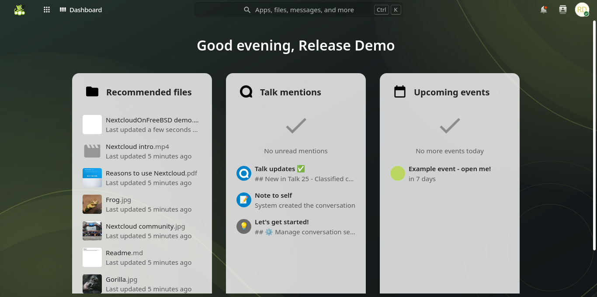
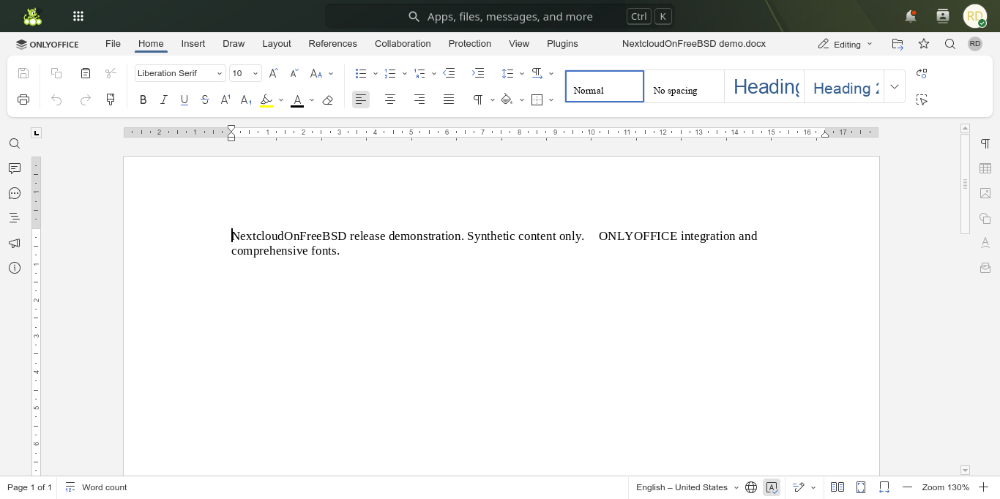
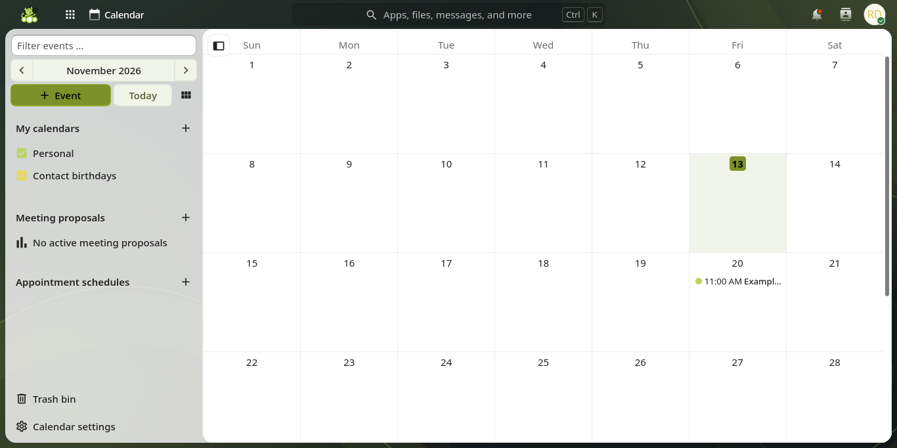
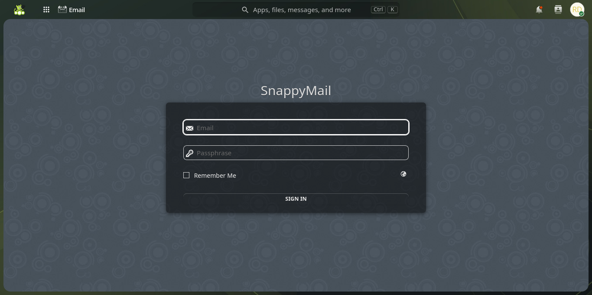

Default · Native
ONLYOFFICE
Nextcloud and ONLYOFFICE run in separate Bastille VNET jails.
Two FreeBSD jails
v1.0.0 · Stable release
Set up Nextcloud with ZFS storage, private networking and HTTPS. A terminal wizard guides you through installation.
Get the installer from the v1.0.0 release page.
FreeBSD 15.1-RELEASE · amd64 · New installations
FreeBSD foundations. Nextcloud services.
Choose at installation
Choose the office server that suits you, or use Nextcloud on its own. Switching office backends after installation isn't supported yet.
Default · Native
Nextcloud and ONLYOFFICE run in separate Bastille VNET jails.
Two FreeBSD jails
Virtual machine
A Nextcloud jail paired with Euro-Office in Docker on a dedicated Alpine Linux bhyve VM.
One FreeBSD jail + one VM
Virtual machine
A Nextcloud jail paired with Collabora Online CODE in Docker on a dedicated Alpine Linux bhyve VM.
One FreeBSD jail + one VM
No office runtime
Nextcloud without an integrated office server or office connector.
One FreeBSD jail
Client Push helps Nextcloud desktop clients notice file changes sooner. Optional Talk adds calls and chat, with its own dedicated jail. It needs additional ports for calls.
Connect existing SFTP or HTTP/HTTPS storage with External files. It is off by default and works with any office choice, with or without Talk. Set up connections in Nextcloud after installation.
Your services, together
Actual views from our demonstration installation. Open a document from Files, work in ONLYOFFICE, and return to your cloud.




Before you start
Use the defaults—Nextcloud 35, PHP 8.5 and MariaDB 12.3—or choose other versions under Advanced software settings. Untested choices show a warning; installation may fail if the selected software is unavailable or incompatible.
Installation
The wizard walks you through setup. Stay at your terminal to review settings and confirm network access.
Download and unpack the installer from the v1.0.0 release page. Keep its directory for Resume, recovery and removal.
Run this from the installer directory as root. The wizard covers storage, networking, HTTPS and applications, and asks before installing missing pkg/Python prerequisites.
sh install.sh installForward the selected web and Talk ports to the FreeBSD host, not its private jails or VM, using the values in your installation plan. An external HTTPS proxy changes the web route; follow the port-forwarding guide for the details. The installer does not configure your router.
Check your settings and choose APPLY. When prompted, open a new SSH connection to check access, then enter KEEP before the timer expires.
Installation may update pkg and required dependencies. Keep your host updated and maintain your own backups afterward.
Copy the example for your office choice and edit its settings. The installer generates passwords; the recipe contains settings and certificate file paths.
sh install.sh plan /root/nextcloud-install.json
sh install.sh install --config /root/nextcloud-install.jsonRun these commands from your installer directory. Planning needs Python 3.11+ and makes no changes to your host. Stay at the terminal during installation to answer prompts and confirm access.
Instance removal
Use the original installer directory. Save and close editors, then disconnect clients. Normal removal keeps all application datasets, snapshots and office VM disks.
sh install.sh remove INSTANCEReplace INSTANCE with your instance name and follow the confirmation prompts. Keep a second SSH connection available to check access.
Retained data is not a full backup or an automatic reinstall. Read the guide before removing an instance or permanently deleting its data.
Documentation & support
Ask for help on GitHub with the steps you followed and the error message. Remove credentials before sharing logs.